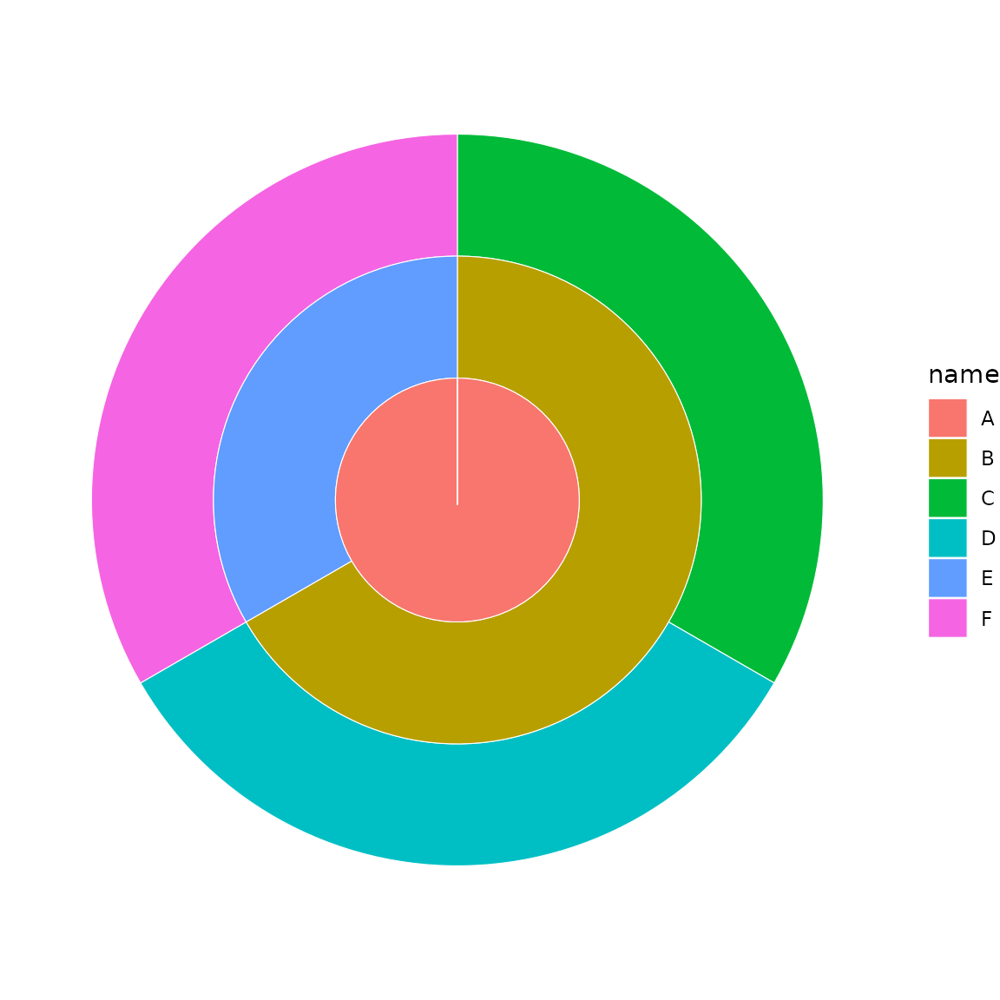
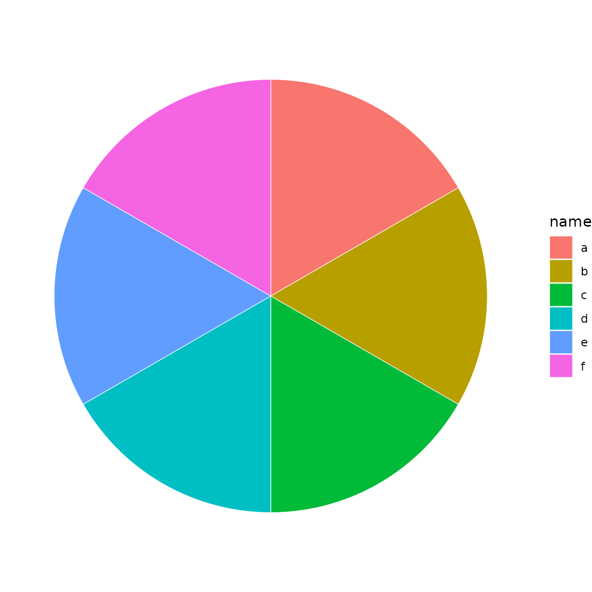
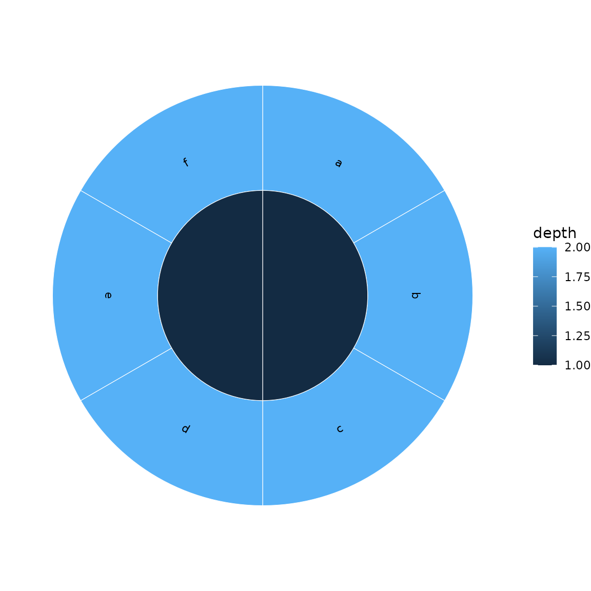
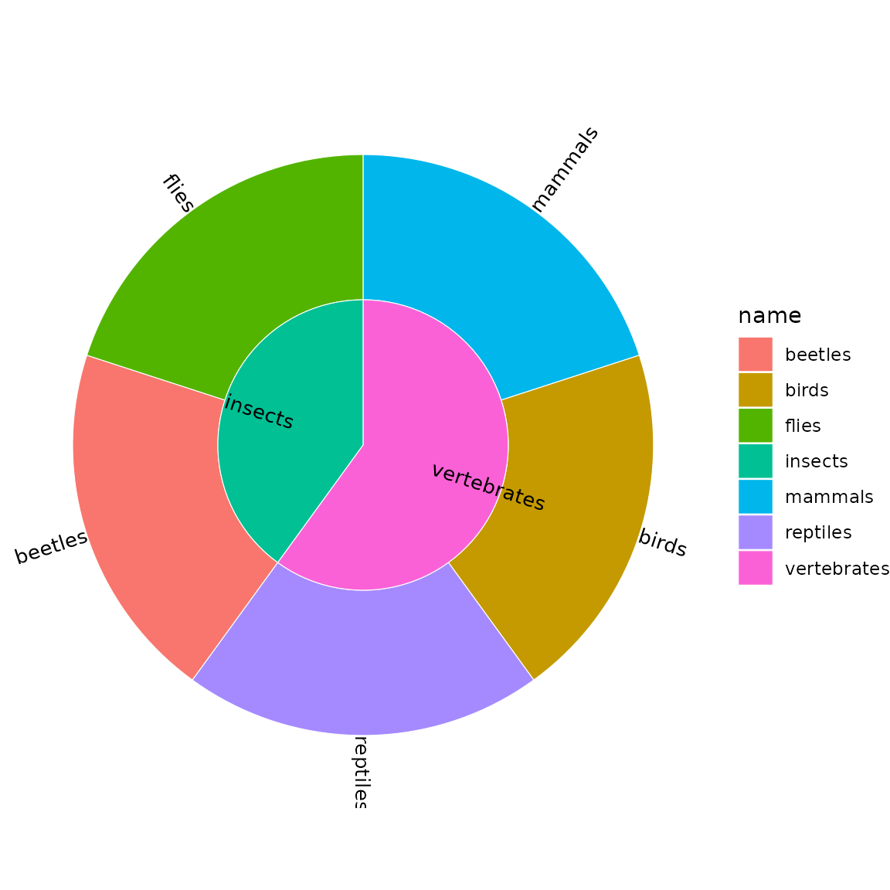
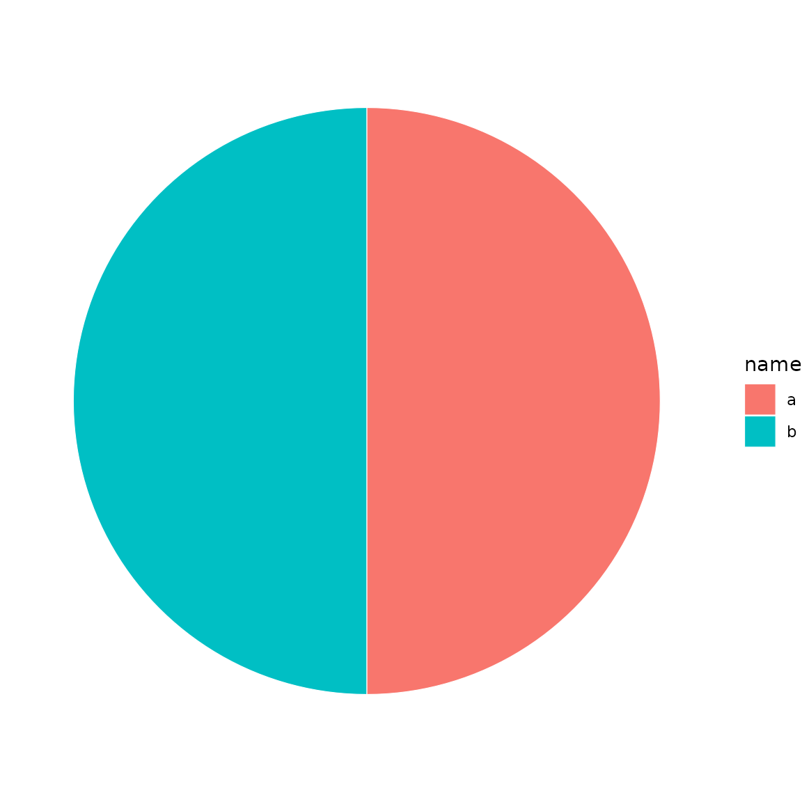
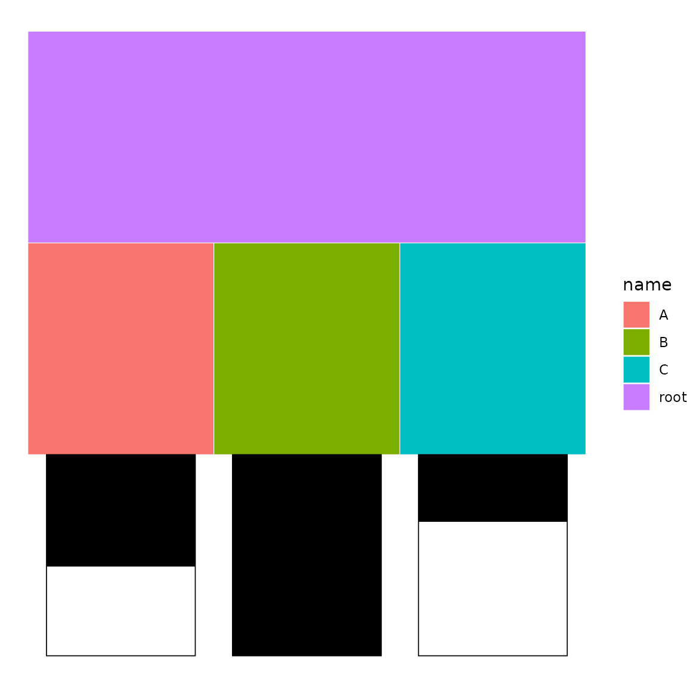
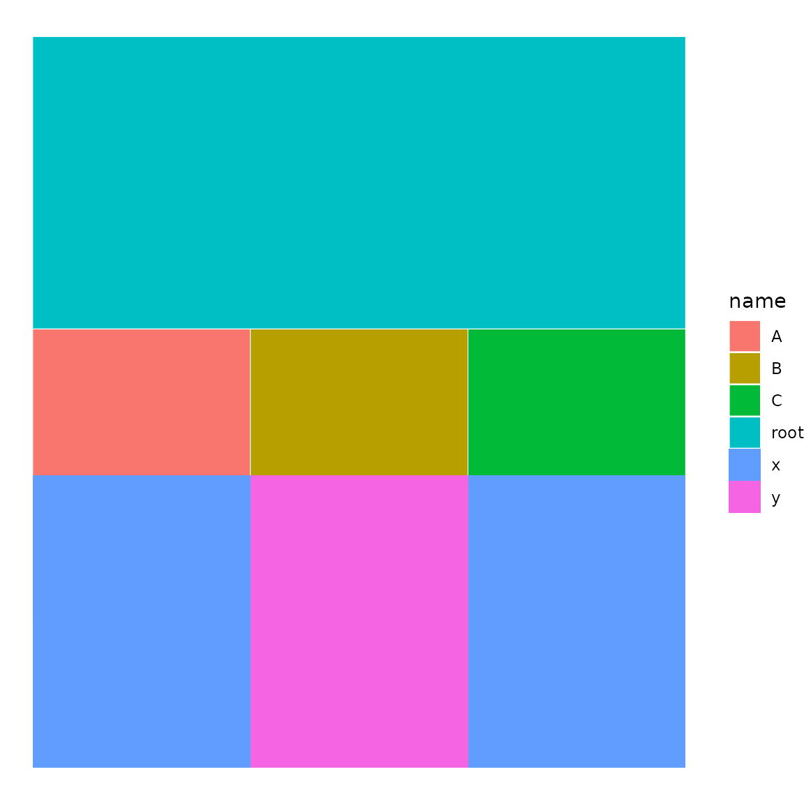
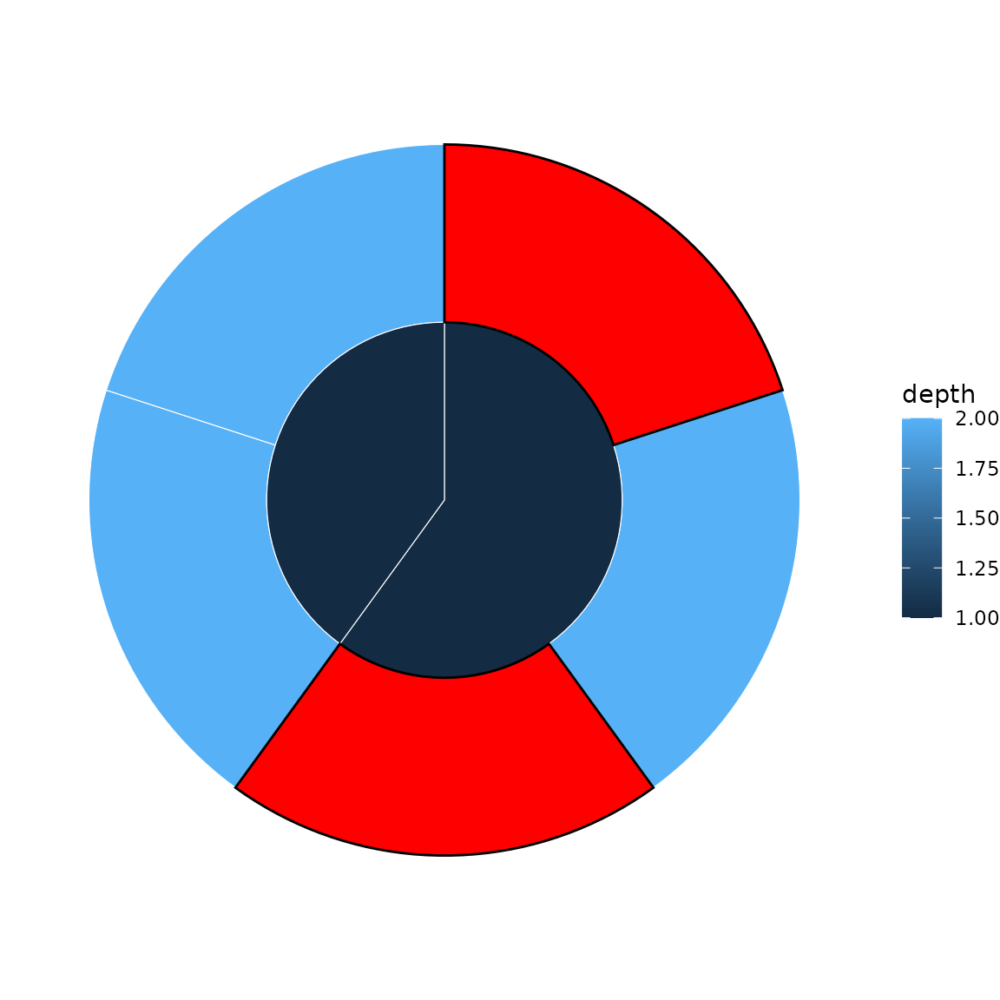
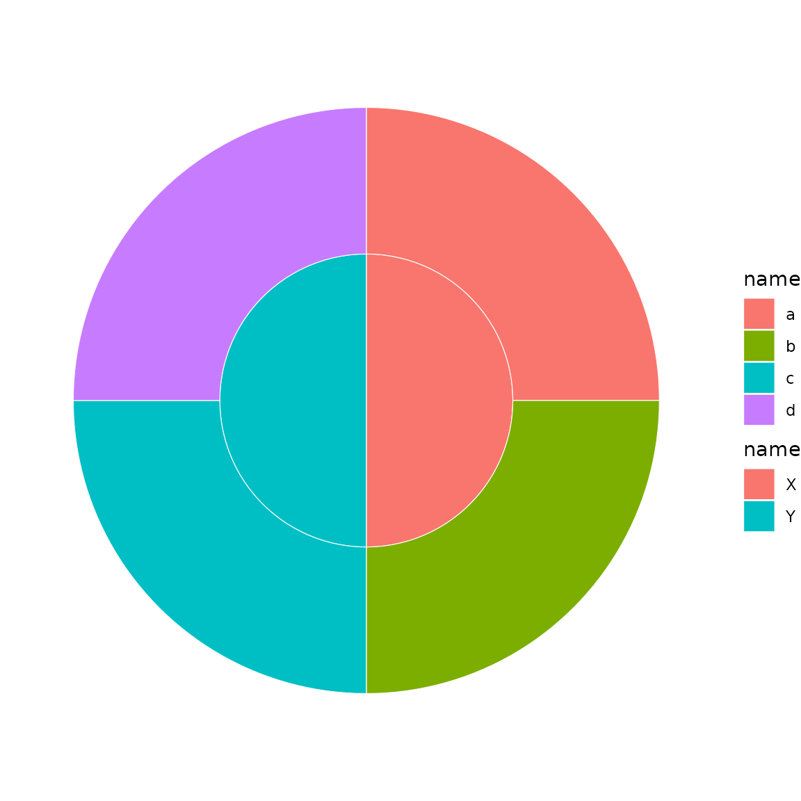
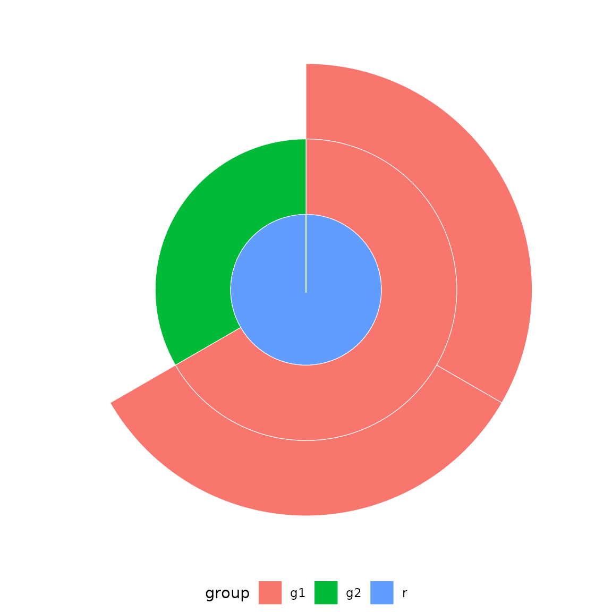

Overview
ggsunburstR creates sunburst and icicle plots from hierarchical data using ggplot2. It accepts multiple input formats and produces standard ggplot2 objects you can customise freely.
Basic usage
The workflow has two steps:
-
Prepare data with
sunburst_data() -
Plot with
sunburst(),icicle(),donut(), orggtree()
library(ggsunburstR)
# Parse a Newick tree string
sb <- sunburst_data("((a, b, c), (d, e, f));")
# Sunburst plot
sunburst(sb, fill = "depth")
# Same data as an icicle plot
icicle(sb, fill = "depth")
Input formats
Newick strings
The most common input for phylogenetic or hierarchical trees:
sb <- sunburst_data("((mammals, birds, reptiles)vertebrates, (beetles, flies)insects)animals;")
sunburst(sb, fill = "name")
Data frames
Use a data frame with parent and child
columns:
df <- data.frame(
parent = c(NA, "root", "root", "fruits", "fruits", "vegs", "vegs"),
child = c("root", "fruits", "vegs", "apple", "banana", "carrot", "pea")
)
sb <- sunburst_data(df)
sunburst(sb, fill = "name")
Path-delimited strings
Hierarchies can also be expressed as slash-delimited paths:
sb <- sunburst_data(c("A/B/C", "A/B/D", "A/E/F"))
sunburst(sb, fill = "name")
Other formats
ggsunburstR also accepts Newick files, node-parent CSVs, lineage
TSVs, ape::phylo objects, and data.tree::Node
objects. See ?sunburst_data for details.
Plot types
Donut charts
A donut is a sunburst restricted to the outermost depth levels:
sb <- sunburst_data("((a, b, c), (d, e, f));")
donut(sb, fill = "name", levels = 1, hole_size = 2)
Tree dendrograms
ggtree() renders the tree as a dendrogram:
sb <- sunburst_data("((a:0.3, b:0.5)X:0.2, (c:0.4, d:0.1)Y:0.3)root;")
ggtree(sb, show_labels = TRUE)Value-weighted sectors
By default, all leaves get equal angular width. Use
values to size sectors proportionally:
sb <- sunburst_data(
"((a, b, c), (d, e));",
values = c(a = 10, b = 5, c = 3, d = 8, e = 2)
)
sunburst(sb, fill = "name")
Fill mapping
The fill parameter accepts column names (quoted or
bare), plus the special values "auto" (maps to depth) and
"none" (static grey):
sb <- sunburst_data("((a, b, c), (d, e, f));")
# Bare name (tidy eval)
sunburst(sb, fill = depth)
# Auto-map to depth
sunburst(sb, fill = "auto")
Labels
Basic labels
Add leaf labels with show_labels = TRUE:
sb <- sunburst_data("((a, b, c), (d, e, f));")
sunburst(sb, fill = "depth", show_labels = TRUE)
Perpendicular labels
Use label_type = "perpendicular" for arc-following
labels:
sunburst(sb, fill = "depth", show_labels = TRUE,
label_type = "perpendicular")
Internal node labels and filtering
Show labels for internal nodes and filter out labels on narrow sectors:
sb <- sunburst_data("((mammals, birds, reptiles)vertebrates, (beetles, flies)insects)animals;")
sunburst(sb, fill = "name", show_labels = TRUE,
show_node_labels = TRUE, min_label_angle = 30,
label_size = 3.5)
Label repulsion (icicle)
Use ggrepel for collision avoidance in icicle plots:
sb <- sunburst_data("((a, b, c, d, e), (f, g, h));")
icicle(sb, fill = "depth", show_labels = TRUE, label_repel = TRUE)Drilldown into subtrees
Zoom into a specific branch with drilldown():
sb <- sunburst_data("((a, b)X, (c, d)Y)root;")
sub <- drilldown(sb, node = "X")
sunburst(sub, fill = "name")
Annotations
Bar chart annotations
Add bar charts adjacent to leaf nodes:
df <- data.frame(
parent = c(NA, "root", "root", "root"),
child = c("root", "A", "B", "C"),
score = c(NA, 0.5, 0.9, 0.3)
)
sb <- sunburst_data(df)
p <- icicle(sb, fill = "name")
bars(p, sb, variables = "score")
Tile (heatmap) annotations
Add colour-coded tiles adjacent to leaf nodes:
df <- data.frame(
parent = c(NA, "root", "root", "root"),
child = c("root", "A", "B", "C"),
group = c(NA, "x", "y", "x")
)
sb <- sunburst_data(df)
p <- icicle(sb, fill = "name")
tile(p, sb, variables = "group")
Highlight specific nodes
Emphasise nodes by name or ID:
sb <- sunburst_data("((a, b, c), (d, e));")
p <- sunburst(sb, fill = "depth")
highlight_nodes(p, nodes = c("a", "c"), fill = "red")
Per-depth fill scales
Use sunburst_multifill() or
icicle_multifill() to map different colour scales to
different hierarchy levels:
sb <- sunburst_data("((a, b)X, (c, d)Y)root;")
sunburst_multifill(sb, fills = list("1" = "name", "2" = "name"))
ggplot2 geom
For idiomatic ggplot2 syntax, use geom_sunburst()
directly with a data.frame:
df <- data.frame(
parent = c(NA, "root", "root", "A", "A"),
child = c("root", "A", "B", "a1", "a2"),
group = c("r", "g1", "g2", "g1", "g1")
)
ggplot2::ggplot(df) +
geom_sunburst(ggplot2::aes(id = child, parent = parent, fill = group)) +
ggplot2::coord_polar() +
theme_sunburst()
Tree inspection
Use nw_print() to inspect tree structure:
nw_print("((a, b)X, (c, d)Y)root;")
#>
#> Phylogenetic tree with 4 tips and 3 internal nodes.
#>
#> Tip labels:
#> a, b, c, d
#> Node labels:
#> root, X, Y
#>
#> Rooted; no branch length.Customisation with ggplot2
Since the output is a standard ggplot2 object, you can add any ggplot2 layer or theme:
sb <- sunburst_data("((a, b, c), (d, e, f));")
sunburst(sb, fill = "name") +
ggplot2::scale_fill_brewer(palette = "Set2") +
ggplot2::labs(title = "Custom sunburst") +
theme_sunburst()
Options
Key parameters for sunburst_data():
-
values— named numeric vector or column name for sector sizing -
branchvalues—"remainder"(default) or"total" -
leaf_mode—"actual"(default) or"extended" -
ladderize— sort by descendant count -
ultrametric— equalise leaf depths -
xlim— angular span (default 360) -
rot— rotation offset in degrees